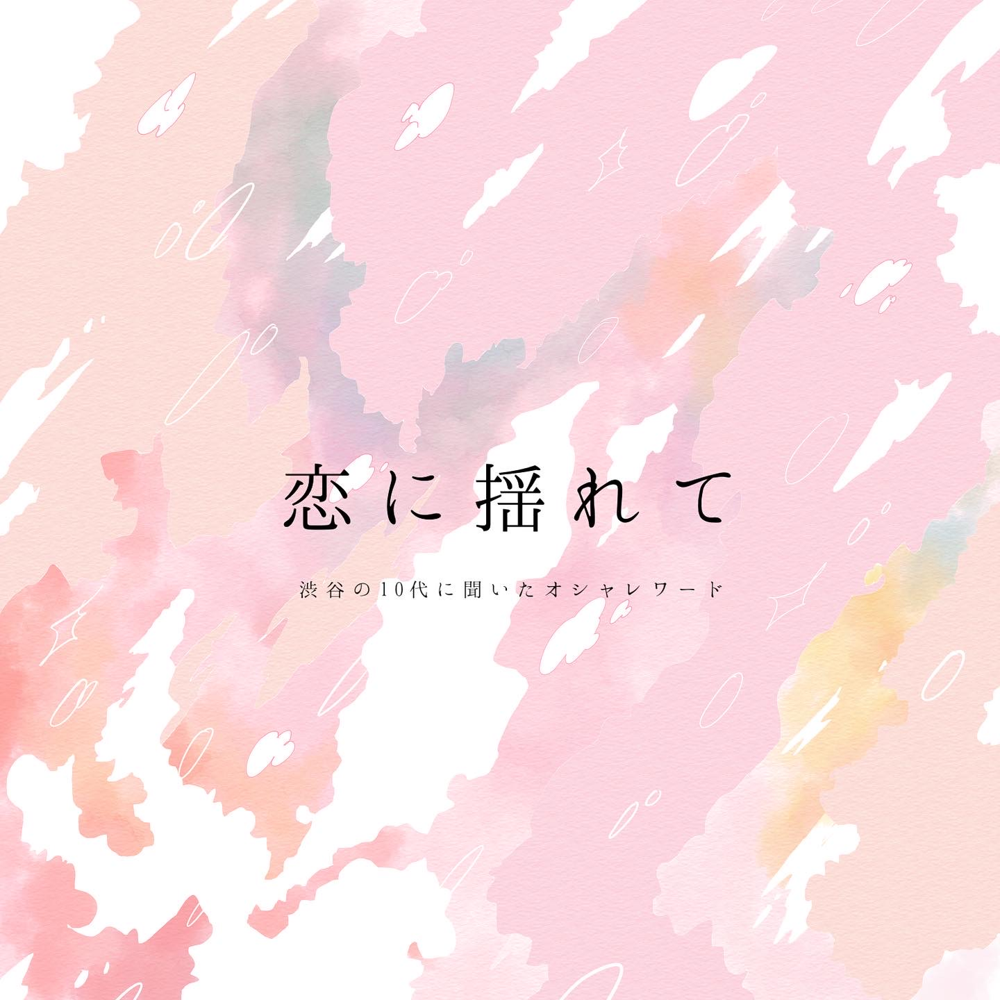

ABOUT
群馬県を活動拠点とする4ピースロックバンドです。ジャンルはオルタナティブポップで、キャッチーでかわいいフレーズが特徴です。活動
現在は、自分が学業で県外にいるためライブ活動は休止中です。音源
2nd EP.「恋に揺れて」
- 恋に揺れて
- 二人アンケート
- 迷宮トリップ
ミュージックビデオ
初音ミクボーカルの音源をYoutubeにアップロードしています。動画で使用されているイラストを担当しました。ラストスターライト
ポッピンスペース
二人アンケート
物販
- BIG LOGO Tシャツ
- バンブーロゴマグ